Uniswap V3 License Expiry
1 Context
Since the license expiry, 8 protocols have forked Uniswap V3 to create their own V3. By Apr 30, 2023:
Uniswap V3 has $2.9B in total TVL on 6 chains. The forks have $263M in total TVL or 9% of Uniswap V3 total TVL.
The biggest fork is Pancakeswap V3 with $260M TVL (99% in the forks total TVL).
Pancakeswap V3 is operating on 2 chains: BNB (87% in total Pancakeswap V3 TVL) and Ethereum (13% in Pancakeswap V3 total TVL).
On Ethereum, Pancakeswap V3 has $37M TVL, which is 1.5% of $2.4B Uniswap V3 TVL.
On BNB, Uniswap V3 has $20M TVL (launched on Mar 16, 2023), which is 9% of $223M Pancakeswap V3 TVL.
1.1 In this analysis
I will examine onchain data since the Expiry, from Apr 1 to Apr 30.
To examine the impact of the Expiry, I will examine Uniswap V3 performance on 2 chains: Ethereum, and BNB.
To see how the forks are doing relative to Uniswap V3, I will compare Uniswap V3 to Pancakeswap V3 on each of Ethereum and BNB chain. To make the comparison more compatible, I will exclude all Uniswap V3 users before the Expiry (i.e. imagine Uniswap V3 launched after the Expiry, the same as the fork).
2 Key Insights
Impact of the Expiry on Uniswap V3:
On Ethereum and BNB, the impact was small and only observable on value locked in the first few days after the Expiry. From Apr 1 to Apr 30, the general trends in value locked and swap activities were either up or plateau.
During Apr 2023, swap activities on Uniswap V3 saw a few surges. On Ethereum, the surge was driven by meme coins. On BNB, the surge was driven by stablecoins.
Pancakeswap V3 on Ethereum and BNB:
Value locked acitivities saw a good start in the first 4 days. Both net value locked per day and # LP per day peaked on Apr 4. Then they decreased.
Swap activities have a healthier trend, were generally up.
Uniswap V3 vs. Pancakeswap V3:
On Ethereum, Uniswap V3 is growing much faster than Pancakeswap V3 (up to 4x in tvl and 20x in swap volume).
It’s the opposite on BNB, where Pancakeswap V3 is growing much faster than Uniswap V3 with bigger gap than Ethereum (up to 40x in tvl and 20 x in swap volume).
As Uniswap V3 user base on Ethereum is much larger than on BNB, the overlap between Pancakeswap V3 user base on Ethereum is also much larger than on BNB.
3 Uniswap V3 since the Expiry
To better see the trend after the Expiry, I will mostly use aggregate value locked (avl) instead of total value locked (tvl) (i.e. exclude value locked before the Expiry).
- Increase LP
-
LP who increases value locked
- Decrease LP
-
LP who decreases value locked
3.1 On Ethereum
3.1.1 Value Locked
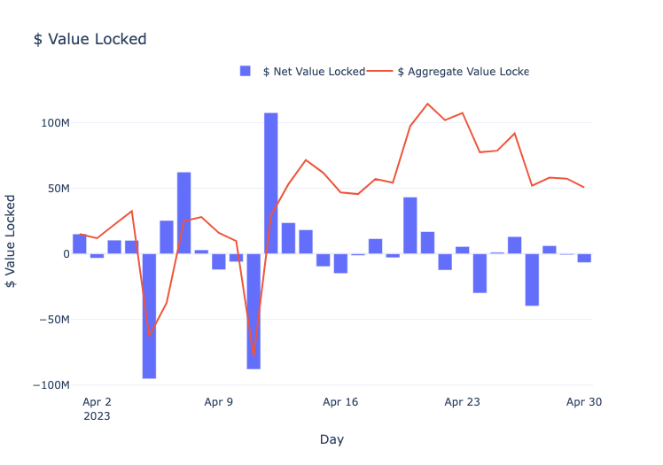
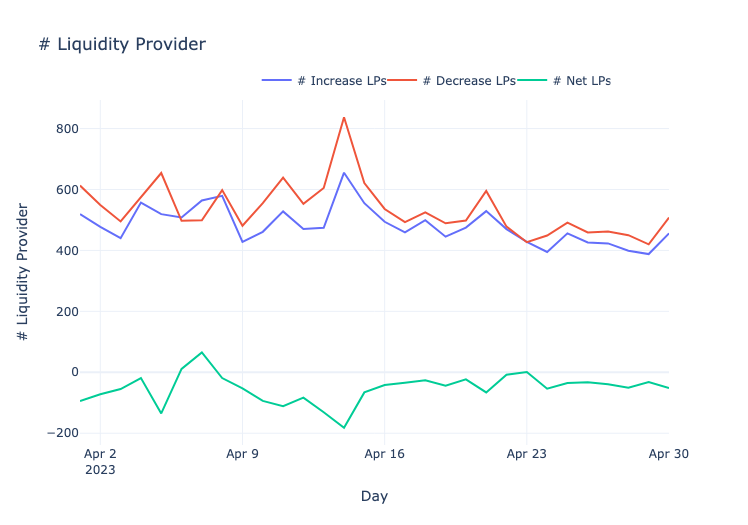
In the first 11 days, there were more increase LP than decrease LP. And by Apr 11, avl was - $78M. Apr 5 saw the most outflow with - $95M in net value locked.
The trend changed on Apr 12, it saw the most inflow with $107M in net value locked. The avl peaked on Apr 21 with $114M then decreased. By Apr 30, avl was $50M.
Meanwhile, only 3 of 30 days have more increase LP than decrease LP. And the trend of both increase LP and decrease LP were sligthly down.
3.1.2 Swap
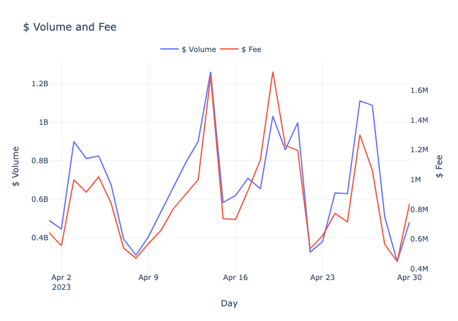
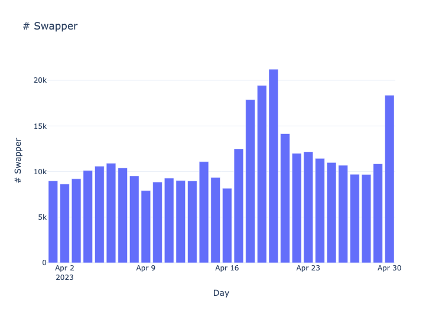
In the first 14 days, the trend of volume was up. It peaked on Apr 14 with $1.3B. Then it decreased. By Apr 30, it was $482M.
Fee and # swapper peaked at the same time (Apr 19 and Apr 20).
3.1.2.1 Which coins drove the surge in # swapper?
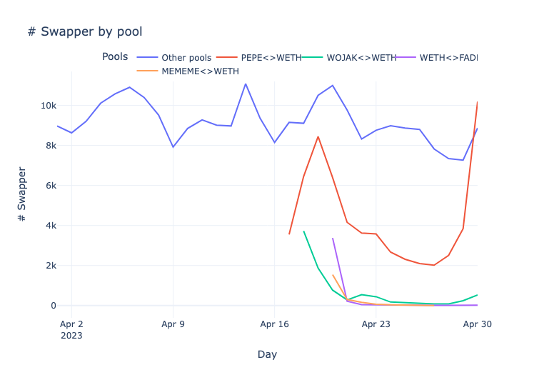
The surge in # swapper was driven by meme coins such as PEPE, WOJAK, FADE, and MEMEME in their pools with WETH.
3.1.2.2 Did the meme coins help Uniswap V3 acquire more new swapper than other coins?
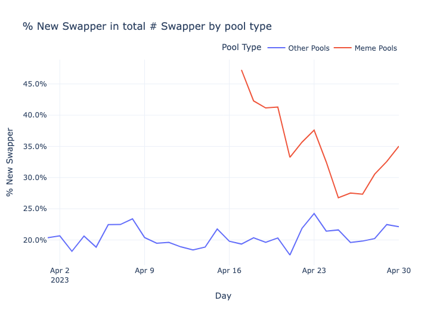
Yes, % new swapper (= # new swapper / total # swapper) in pools of the meme coins is 1.2x - 2.4x higher than in pools of other coins.
3.2 On BNB
3.2.1 Value Locked
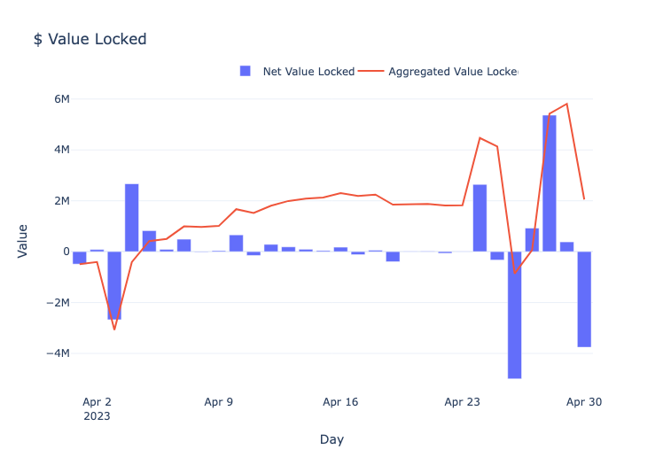
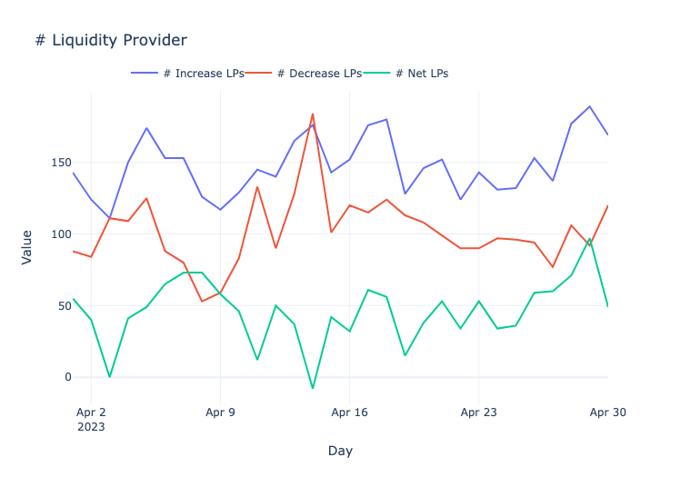
In most days, the net value locked was positive. A big outflow day was immediately followed by a big inflow day. By Apr 30, the aggreagate value locked was $1.75M. This is much lower than what is showned on Uniswap V3 website. The reasons are:
- I exclude BTCBR coin as its’ price data is wrong, which inflates value locked a lot.
- The source data I use doesn’t have price data of UITP. The USDT<>UITP TVL is $76M (as shown on Uniswap V3 website), however its 24h volume is only $50. This raises a question that is this fake TVL. How can its 24h volume be so low relative to its TVL. My solution is also excluding UITP from calculating Uniswap V3 TVL on BNB chain.
Unlike on Ethereum, 28 of 30 days have more increase LP than decrease LP.
3.3 Swap
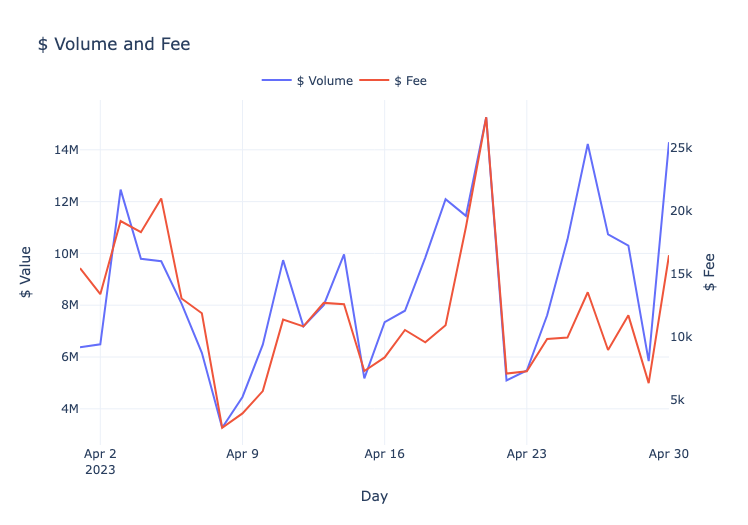
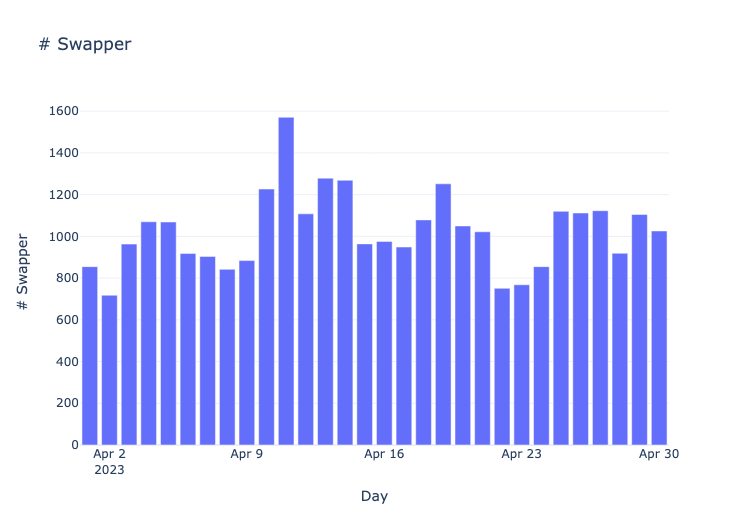
Volume, fee, and # swapper basically moved in a range. Volume and fee are more volatile than # swapper, which is healthier than otherwise, in my opinion.
Volume and fee might be affected by coins’ price volatility, which is normal in crypto. While with # swapper, we can have a clearer picture of swap usage.
On Apr 10 and 11, # swapper surged while volume and fee did not.
3.3.1 Which coins drove the surge in # swapper?
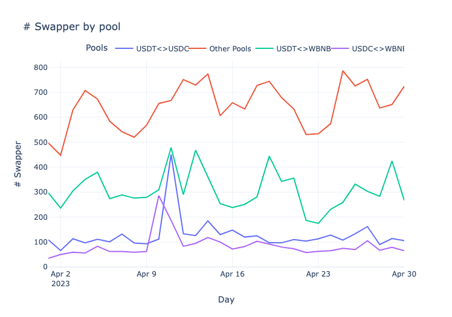
USDC, USDT, and WBNB are 3 coins behind the surge in # swapper on Apr 10, 11.
3.4 Summary
On Ethereum and BNB, impact of the Expiry on Uniswap V3 was small and only observable on value locked in the first few days after the Expiry. From Apr 1 to Apr 30, the general trends in value locked and swap activities were either up or plateau.
During Apr 2023, swap activities on Uniswap V3 saw a few surges. On Ethereum, the surge was driven by meme coins. On BNB, the surge was driven by stablecoins.
4 Pancakeswap V3
4.1 On Ethereum
4.1.1 Value Locked
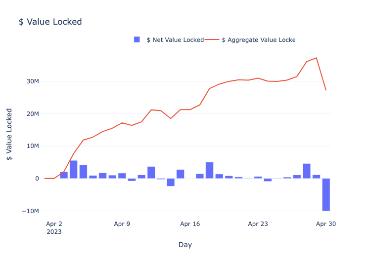
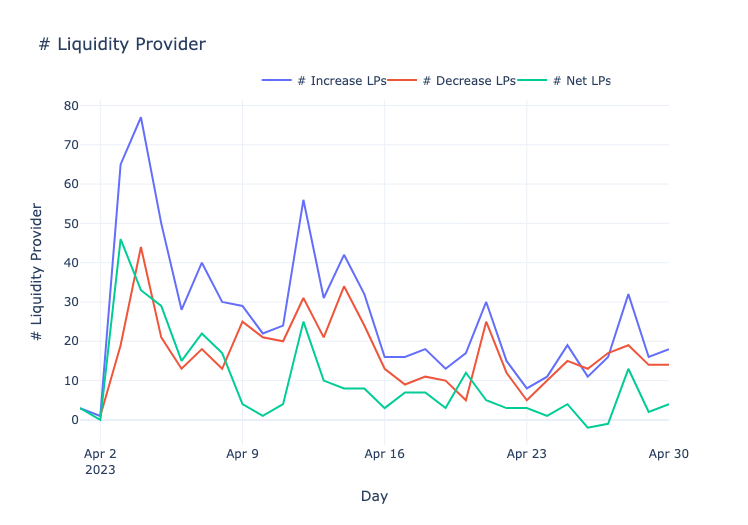
From Apr 1 to Apr 30, Pancakeswap V3 on Ethereum has $27M in aggregate value locked. This number can also be treated as TVL because Pancakeswap V3 launched on Apr 1.
4 days after launch, on Apr 4, Pancakeswap V3 saw the most inflow of value locked per day with $5.5M net value locked. However, value locked inflow lost momentum after that. On Apr 30, Pancakeswap V3 saw the most outflow in value locked per day with - $10M net value locked.
# liquidity provider surged in first 4 days, peaked on Apr 4 with 77 LPs who increased value locked, and 44 LPs who decreased value locked. Since then, the numbers were in downward slopes. By Apr 30, the numbers were 18 increase LPs and 14 decrease LPs.
Most of the time in Apr, there were more LPs who increased their value locked than LPs who decreased their value locked.
4.1.2 Swap
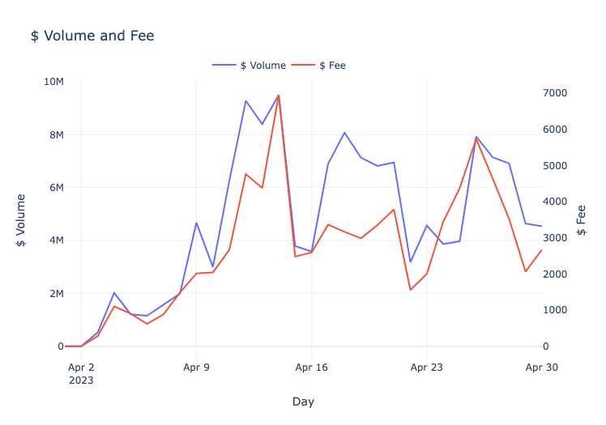
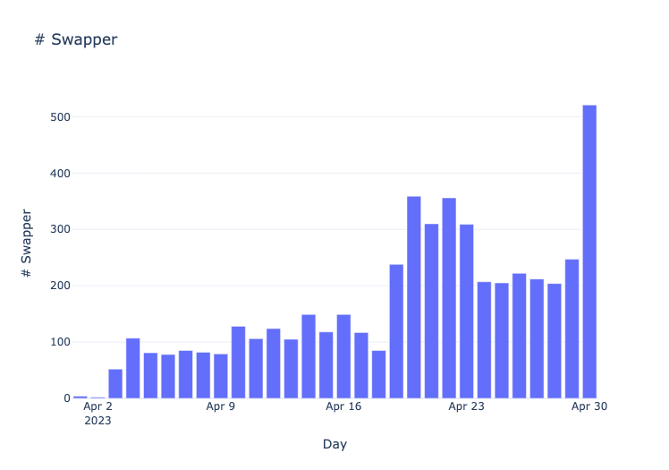
During 2 weeks after launch, volume and fee were rising and peaked on Apr 14 with $9.4M in volume and $7K in fee. After that, the numbers decreased. By Apr 30, they are $4.5M in volume and $2.6K in fee.
Unlike volume and fee, # swapper kept rising during the period. On Apr 30, it peaked at 720 # swapper per day.
4.2 On BNB
4.2.1 Value Locked
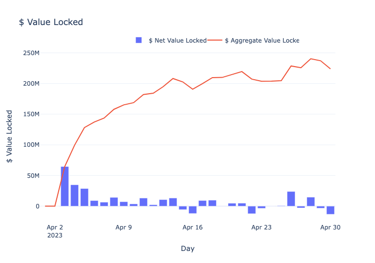
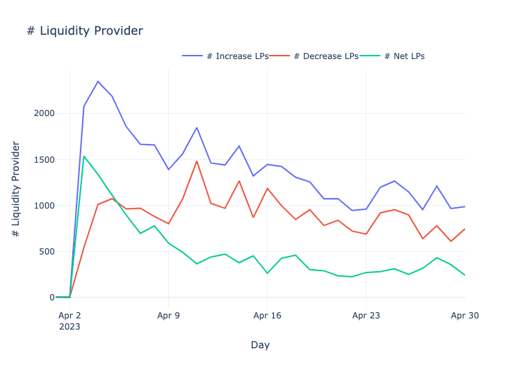
By Apr 30, Pancakeswap V3 on BNB has $214M in aggregate value locked. And the trend is similar to Ethereum, where net value locked per day peaked early on Apr 3, then lost momentum.
# liquidity provider (LP) also peaked early on Apr 4 with 2.3K # LPs who increased value locked, and 1K # LPs who decreased value locked. By Apr 30, the former was down to 987 # LPs and the latter was down to 747 # LPs.
Increase LPs was always greater than decrease LPs during the period.
4.2.2 Swap
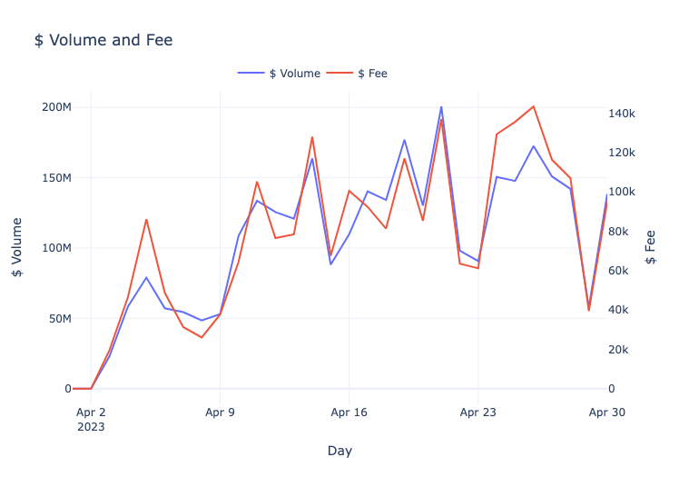
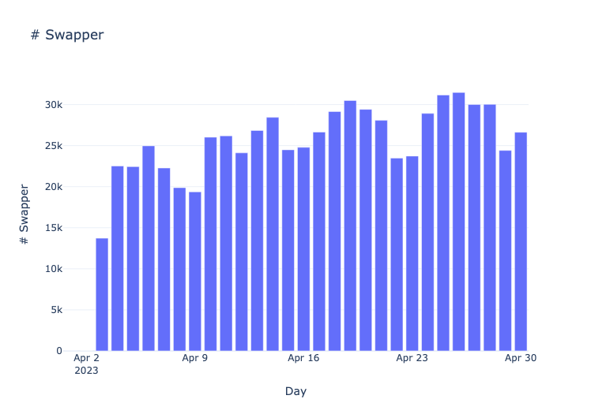
From Apr 1 to Apr 21, volume and fee were in upward slopes. Volume surpassed $100M on Apr 10, peaked at $200M on Apr 21. After that, it gradually decreased. On Apr 30, it was $138M.
# swapper peaked 5 days later than volume on Apr 26 with 31.5K # swapper. Overall, the trend is up.
4.3 Summary
On Ethereum and BNB:
Value locked acitivities of Pancakeswap V3 saw a good start in the first 4 days. Both net value locked per day and # LP per day peaked on Apr 4. Then they decreased.
Swap activities have a healthier trend, were generally up from Apr 1 to Apr 30.
5 Uniswap V3 vs. Pancakeswap V3
In this section, let’s imagine a scenario where Uniswap V3 launched after the Expiry, the same as Pancakeswap V3. Then compare the 2 V3s across metrics to examine their performance since the Expiry.
My method is exclude all activities of LPs and Swappers who started using Uniswap V3 before the Expiry.
5.1 On Ethereum
5.1.1 Value Locked
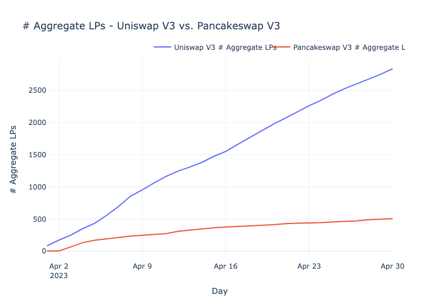
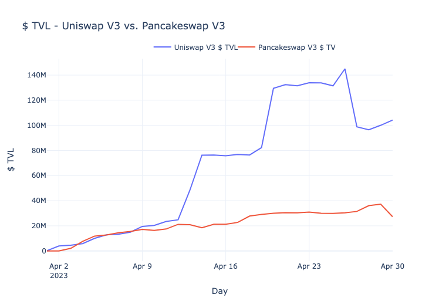
By Apr 30, Uniswap V3 grew much faster than Pancakeswap V3 in term of aggregate lp and tvl.
almost 6x in # aggregate lps (2.8K vs. 500).
almost 4x in $ tvl ($104M vs. $27M).
5.1.2 Swap
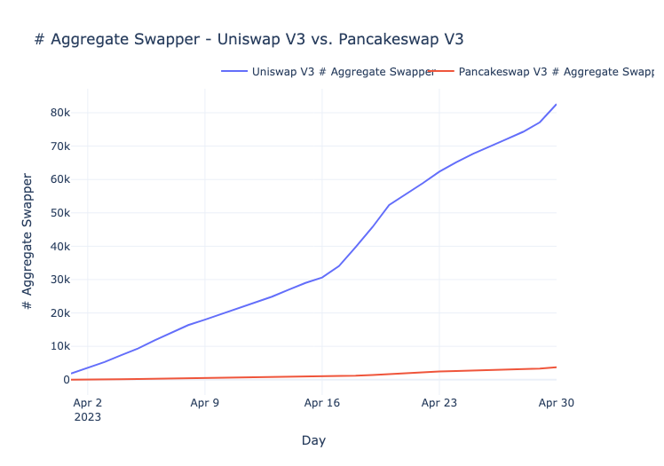
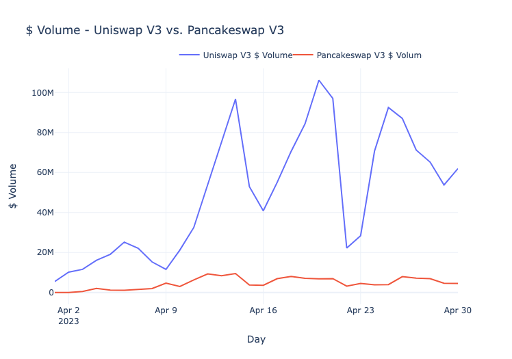
By Apr 30, Uniswap V3 grew much faster than Pancakeswap V3 in term of aggregate swapper and volume.
- 20x in # aggregate swapper (82K vs. 3.7K).
- 10x in $ volume per day when comparing highest days ($106M vs. $9.5M).
5.2 On BNB
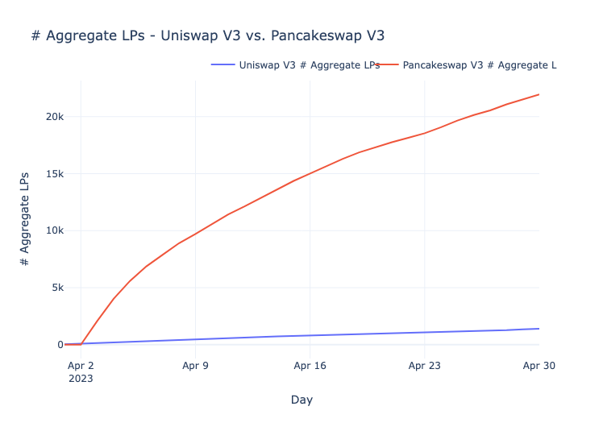
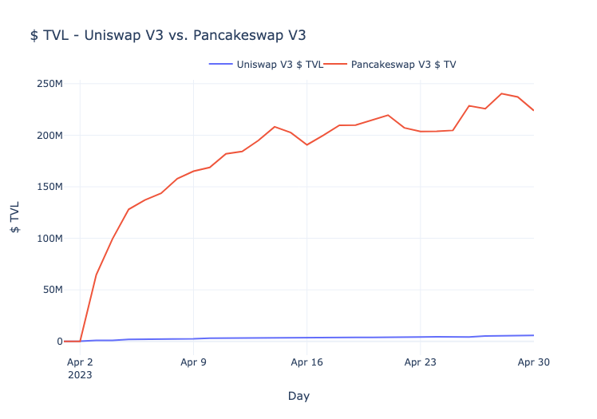
The picture is opposite on BNB. By Apr 30, Pancakeswap V3 grew much faster than Uniswap V3 both in term of aggregate lp and tvl.
almost 20x in # aggregate lp (22K vs. 1.4K).
almost 40x in $ tvl ($224M vs. $6M).
5.2.1 Swap
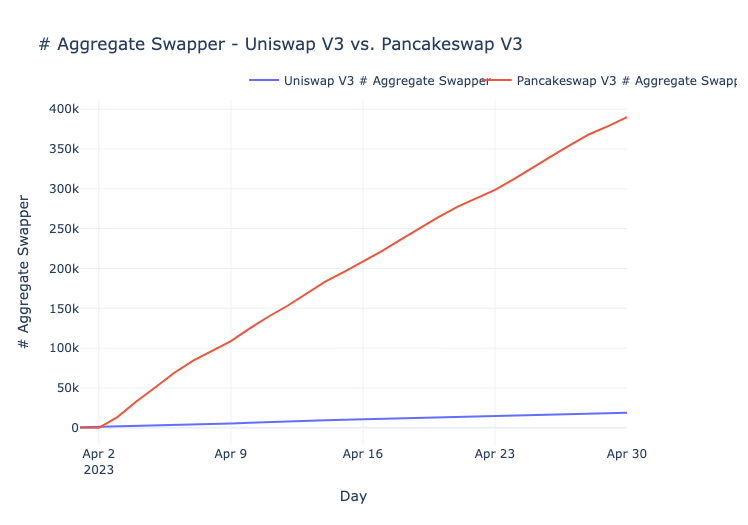
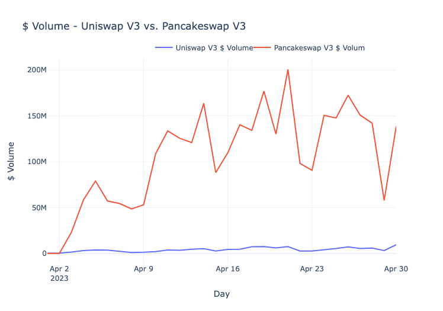
Unlike the situation on Ethereum, by Apr 30, Pancakeswap V3 grew much faster than Uniswap V3 both in term of aggregate swapper and volume.
- 20x in # aggregate swapper (390K vs. 19K).
- 20x in $ volume per day when comparing highest days ($200M vs. $9.5M).
5.3 Pancakeswap V3 Users who are also Uniswap V3 Users
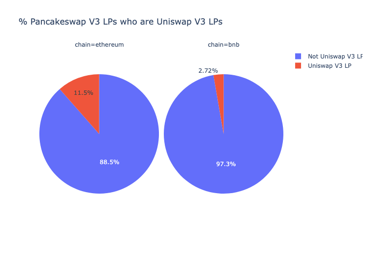
More than 1/10 of Pancakeswap V3 LP on Ethereum are Uniswap V3 LP. The number is only 3% on BNB.
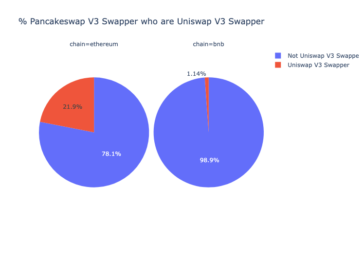
More than 1/5 of Pancakeswap V3 Swapper on Ethereum are Uniswap V3 Swapper. The number is only 1% on BNB.
5.4 Summary
Since the Expiry:
On Ethereum, Uniswap V3 is growing much faster than Pancakeswap V3 (up to 4x in tvl and 20x in swap volume).
It’s the opposite on BNB, where Pancakeswap V3 is growing much faster than Uniswap V3 with bigger gap than Ethereum (up to 40x in tvl and 20 x in swap volume).
As Uniswap V3 user base on Ethereum is much larger than on BNB, the overlap between Pancakeswap V3 user base on Ethereum is also much larger than on BNB.
6 Conclusion
Though the V3 license expired, the forks are be launched, with 2 years of a head start, Uniswap V3 is fine and still going strong on Ethereum. On BNB, on the other hand, Pancakeswap is still the dominant Dex, in part Uniswap V3 just launched 2 months ago in early Mar 2023.
7 Appendix
- Data source and Queries.